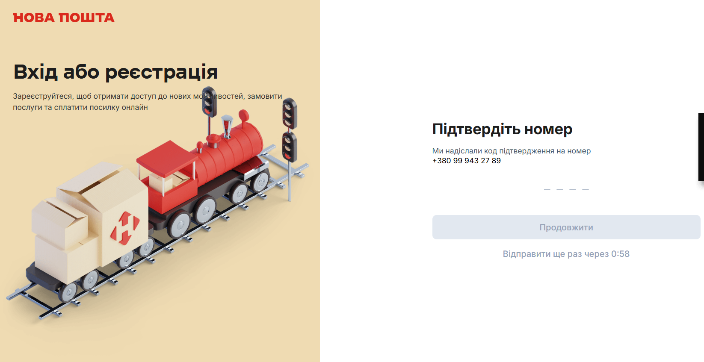

| Стратегічний фокус | AS IS | Ключова метрика (KPI) |
|---|---|---|
|
1. Забезпечити оцінку Customer Satisfaction по новій формі створення відправлень
|
Почнемо міряти в Q3 | 4.8 |
|
2. Перевести 1 000+ компаній з Європи та світу на регулярну роботу з рахунками через новий розділ взаєморозрахунків.
|
0 | Робота 1 000+ компаній з рахунками в кабінеті |
|
3. Створити єдиний вхід для України та Європи, де бізнес-клієнт управляє всією логістикою без повторних реєстрацій, перемикань і бар’єрів, з оцінкою задоволеності користувачів + 4,6 СSI
|
4 | Зростання загальної задоволеності (CSI) до рівня 4.6+ |
|
4. Реалізувати onбординг нових бізнес клієнтів в декілька кліків
|
4 дні | Підписання договору з компанією за 20 хв |
Новий
бізнес-кабінет
My Nova Post & України
Єдина сучасна екосистема для бізнесу. Швидкість, зручність та надійність в одному кабінеті.
Гортайте вниз
| Задача | Що зробили |
|---|---|
|
Нова форма одинична форма створення
|
Підготували прототип, провели інтерв'ю з 6 користувачами з ЄС|України та почали бізнес аналіз |
|
Створення нового розділу взаєморозрахунків у My Nova Post
|
Підготували прототип, провели інтерв'ю з 7 користувачами з ЄС|України та почали бізнес аналіз |
|
Впровадження наскрізної системи авторизації та реєстрації між європейським та українським системами
|
Проведений бізнес аналіз існуючого всіх задіяних систем в контурі ЄС|Україна та переданий на розробку в ІТ департамент |
|
Укладання договору онлайн
|
Знайдено провайдера та початі переговори щодо підписання договору європейськими клієнтами в 1 клік |
My Nova Post
+460%
Зростання створених відправлень за 3 міс.
6 300 ➔ 35 300 посилок
6 300 ➔ 35 300 посилок
+60%
Зростання MAU
4 900 ➔ 7 800 користувачів
4 900 ➔ 7 800 користувачів
3.4%
Посилок створюється через кабінет
ріст з 0.5%
ріст з 0.5%
2 450
Посилок через масове створення
3.77
CSI (падіння з 3.99)
БК України
+12.5%
Зростання створених відправлень за 3 міс.
6.4 млн ➔ 7.2 млн посилок
6.4 млн ➔ 7.2 млн посилок
+6.7%
Зростання MAU
198 тис ➔ 205 тис користувачів
198 тис ➔ 205 тис користувачів
18.4%
Посилок створюється через кабінет
ріст з 17.77%
ріст з 17.77%
Нова форма одинична форма створення

Завершити бізнес аналіз та реалізувати нову форму створення відправлень в My Nova Post з можливістю оцінки клієнтом, книгою контактів та шаблонів пакувань
Створення нового розділу взаєморозрахунків у My Nova Post

Завершити бізнес аналіз та почати розробку нового розділу в My Nova Post
Впровадження наскрізної системи авторизації та реєстрації між європейським та українським системами

Реалізувати в My Nova Post можливість авторизації для користувачів України та ЄС
Укладання договору онлайн

Провести інтеграцію з провайдером та запустити цифровий підпис договору бізнес клієнта за декілька хвилин в Чехії
Analysis
Авторизація та Реєстрація
Реліз на 3 квартал
Analysis

Рольова модель
Реліз на 3 квартал
Development

Глобальний пошук
Реліз на 3 квартал
Development

Масовий трекінг Європи
Реліз на 3 квартал
Development

Feature Flags (Поетапний реліз та A/B тестування) в БК ЄС
Реліз на 3 квартал